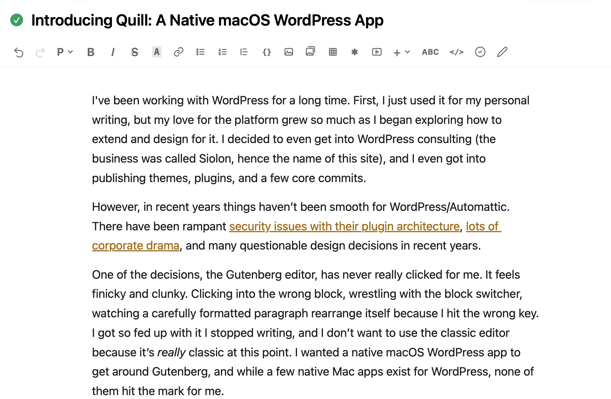
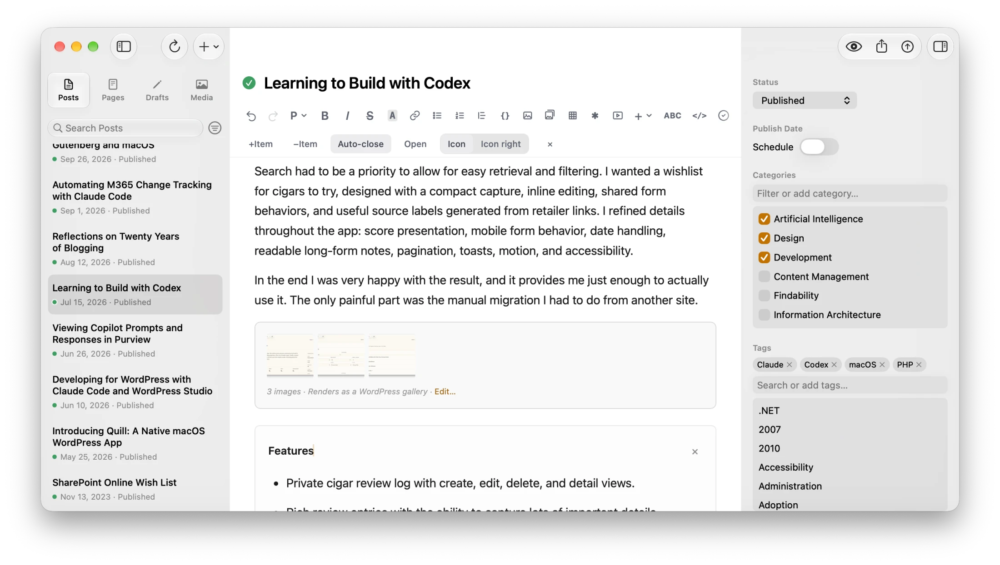
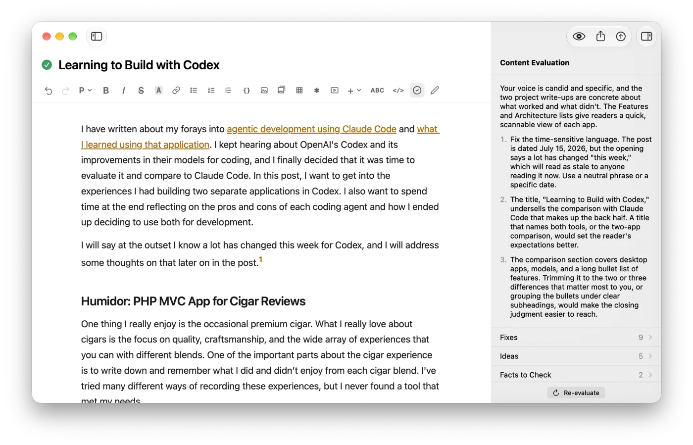
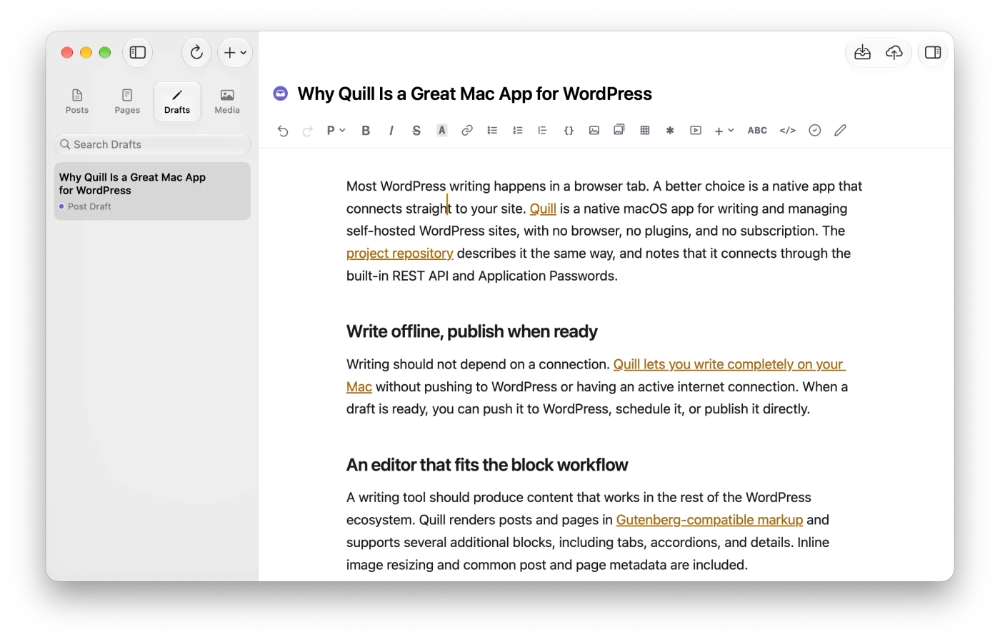
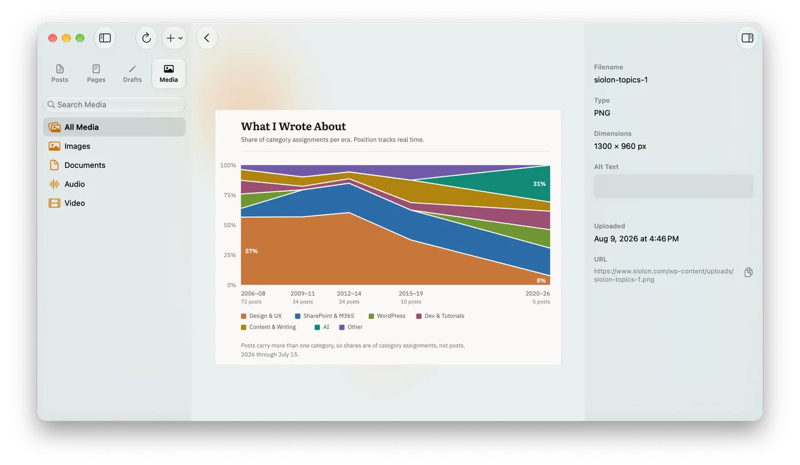

Quill is free to use.
No account, no subscription, no plugin on your site.
Write, edit and publish to your self-hosted WordPress site from a native Mac app, without opening the WordPress admin.
Free

Editor
Write posts and pages with headings, lists, tables, images, galleries, footnotes and embeds. WordPress blocks like Columns, Tabs and Accordion work like the rest of your text, and posts save in the same block format as the WordPress editor, so you can switch between the two.

AI Writing Assistant
Evaluate a post to see what works, the few changes that would improve it most, and a list of specific fixes. Select any passage to rework it in place. The AI features are optional and use your own Anthropic API key; without one, you won't see them.

Offline Writing
Drafts stay on your Mac until you send them, so you can write without a connection. Quill autosaves every 30 seconds, brings back unsaved changes the next time you open it, and warns you if the post was changed in WordPress while you were editing.

Media Library
Browse every image, document, video and audio file on your site without opening the WordPress admin. Filter by type, upload new files, edit alt text and copy a file's URL. iPhone HEIC photos are converted to JPEG when you upload them.

macOS 27 (Golden Gate) on Apple Silicon
Quill will not launch on earlier versions
Self-hosted WordPress 7+
May work in older versions but not tested
WordPress.com is not supported
Quill uses the self-hosted REST API
HTTPS required
The app requires HTTPS to connect
Download and unzip
Download the ZIP, unzip it, and move Quill.app to your /Applications folder.
Connect your site
Open Quill and enter your site's address. WordPress opens in your browser and asks you to approve the connection; click Yes, I approve of this connection. There's no application password to create. If your site turns browser approval off, Quill asks for an application password instead.
Add a Claude API key (optional)
Create a key in the Claude Platform dashboard. Quill offers to add it right after you connect, or you can add it later in Settings.
No account, no subscription, no plugin on your site.